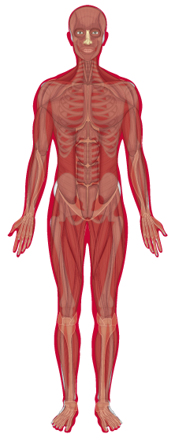

Eyes
- Blindness (macular degeneration)
- Cataracts
- Stinging, excessive tearing and blinking
Brain & Psyche
- Stroke (cerebrovascular accident)
- Addiction/withdrawal
- Altered brain chemistry
- Anxiety about tobacco’s health effects
Ears
- Hearing loss
- Ear infection
Mouth & Throat
- Cancers of lips, mouth, throat, larynx, and pharynx
- Sore throat
- Impaired sense of taste
- Halitosis (bad breath)
Nose
- Cancer of nasal cavities and paranasal sinuses
- Impaired sense of smell
Hair
- Odour and discolouration
Teeth
- Periodontal (gum) disease; gingivitis; periodontitis
- Loose teeth, tooth loss
- Root-surface caries, plaque
- Discolouration and staining
Heart
- Coronary thrombosis (heart attack)
- Atherosclerosis; damage and occlusion of coronary vasculature
Lungs
- Lung, bronchus, and tracheal cancer
- Chronic obstructive pulmonary disease (COPD); emphysema
- Chronic bronchitis
- Respiratory infection; influenza; pneumonia; tuberculosis
- Shortness of breath; asthma
- Chronic cough; excessive sputum production
Chest & Abdomen
- Possible increased risk of breast cancer
- Oesophageal cancer
- Gastric, colon and pancreatic cancer
- Abdominal aortic aneurysm, peptic ulcer
Hands
- Peripheral vascular disease; poor circulation (cold fingers)
Skin
- Psoriasis
- Loss of skin tone; wrinkling; premature ageing
Liver
- Liver cancer
Kidneys & Bladder
- Kidney and bladder cancer
Male Reproduction
- Infertility; sperm deformity; loss of motility; reduced number of sperms
- Impotence
Female Reproduction
- Cervical cance
- Premature ovarian failure
Skeletal System
- Osteoporosis
- Hip fracture
- Susceptibility to back problems
- Bone marrow cancer
Legs & Feet
- Peripheral vascular disease; cold feet; leg pain; gangrene
- Deep vein thrombosis
Circulatory System
- Buerger’s disease (inflammation of arteries, veins, and nerves in the legs)
- Acute myeloid leukemia (blood cancer)
Immune System
- Impaired resistance to infection
Wounds & Surgery
- Impaired wound healing
- Poor postsurgical recovery
- Burns from cigarettes and from fires caused by cigarettes
Check